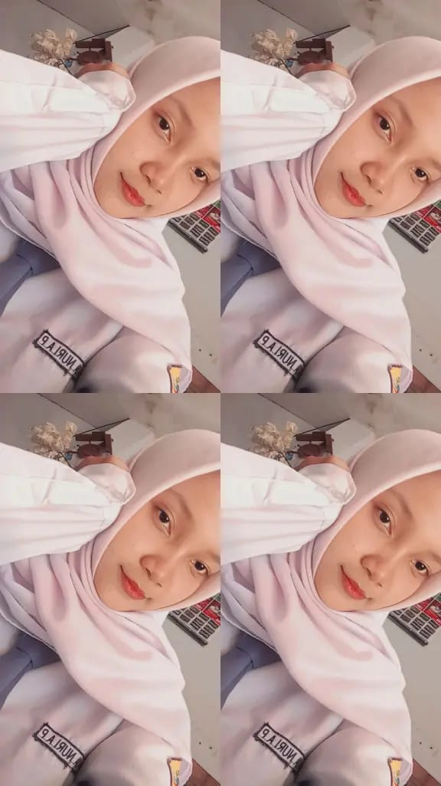

TENTANG SAYA
Aluna Nuri
Awaliyah Putri
Saya adalah siswa kelas XI RPL di SMKN 8 JEMBER yang sedang menekuni bidang web development. Saya tertarik pada desain dan pengembangan tampilan website yang rapi, sederhana, dan mudah dipahami oleh pengguna.
Tentang saya
Saya senang belajar tentang struktur halaman, tata letak, warna, dan interaksi sederhana di website. Proses belajar saya dimulai dari memahami dasar HTML, CSS, dan JavaScript, lalu mencoba membuat proyek kecil yang bermanfaat dan bisa saya tampilkan sebagai portofolio.
Saya juga suka mempelajari hal baru di dunia digital, terutama yang berkaitan dengan desain, teknologi, dan pemecahan masalah. Saya ingin terus berkembang dan membangun kemampuan agar dapat membuat website yang lebih baik di masa depan.
Keahlian
Hobi & minat
Belajar teknologi, mencoba project kecil, mengerjakan desain visual, dan mengeksplorasi cara membuat produk digital yang lebih menarik dan nyaman digunakan.
Komitmen
Saya berkomitmen untuk terus belajar, berlatih, dan menambah pengalaman melalui project-project sederhana agar kemampuan saya semakin berkembang dan siap untuk menghadapi tantangan di dunia teknologi.
Kembali ke halaman utama